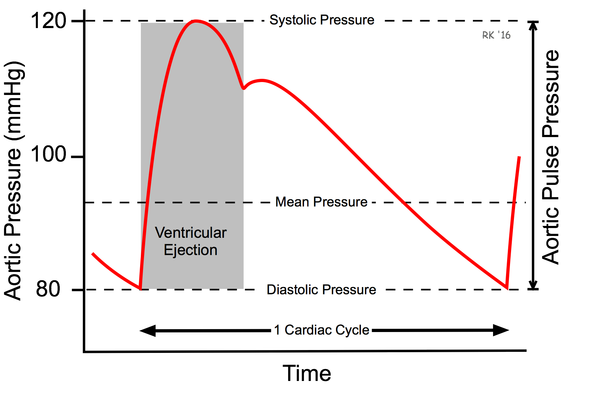
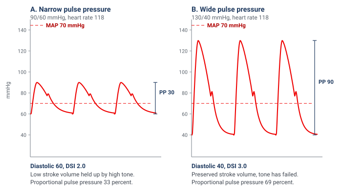
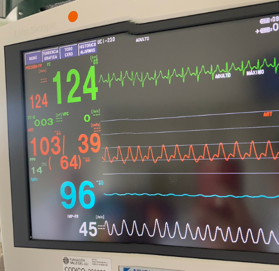

Module I2
At the bedside: normotensive shock, pulse pressure, and hemodynamic phenotype
Module I1 closed by promising the case that breaks the plumbing habit: the patient whose blood pressure looks acceptable and who is nonetheless in shock. This is that module, and it is deliberately clinical. Physiology only earns its keep if it changes what you notice, and what a clinician notices is decided by which numbers they have been taught to read.
Three ideas travel together here and are usually taught apart. The first is that shock is a statement about oxygen use and not about pressure, which Module N1 established and which the Novice shock-type grid then quietly undercuts by carrying a low mean arterial pressure in every column. The second is that an arterial pressure is not one number but at least three, and the two that get discarded, the pulse pressure and the diastolic pressure, carry most of what the mean has averaged away. The third is that an etiologic diagnosis and a hemodynamic phenotype are different objects: two patients with the same words at the top of the chart can present with opposite circulations, and what you do next follows the circulation. Tying them together is arithmetic the Novice pathway already gave you in Module N3 and Module I1 then took apart.
That is the module in one line. A mean arterial pressure measures neither flow nor tone. It is a scalar produced by both, and the arithmetic is degenerate: infinitely many pairs of cardiac output and vascular resistance produce a MAP of 70 mmHg, and they range from a healthy circulation to a dying one. Reading a MAP backwards to a hemodynamic state is solving one equation with two unknowns, the same structural failure Module I11 identified in the right atrial pressure. The difference is that nobody defends the central venous pressure any more, while the mean arterial pressure still decides, in most units, whether a patient is in shock.
Shock with a blood pressure that looks acceptable
Shock, as N1 set it out, is a state in which observed oxygen consumption is insufficient for what the body requires, whether because delivery has failed or because the tissues cannot use what arrives. Nothing in that definition mentions arterial pressure, and Vincent and De Backer's review treats hypotension as a usual accompaniment of circulatory shock rather than a criterion for it. The operational definitions then reintroduce the pressure. Sepsis-3 identifies septic shock clinically by a vasopressor requirement to maintain a mean arterial pressure of 65 mmHg or greater together with a lactate above 2 mmol/L in the absence of hypovolemia, a combination carrying hospital mortality above 40 percent. That is a defensible way to specify a trial population and a poor way to decide who is sick, because it defines the condition partly by whether somebody has already reached for a vasopressor.
Whether that matters has been answered empirically. Puskarich and colleagues took a multicentre trial of early sepsis resuscitation and split its 300 subjects into those enrolled with a lactate of 4 mmol/L or more while normotensive, which they called cryptic shock, and those enrolled with sustained hypotension after a fluid challenge, called overt shock. There were 53 and 247 respectively, with similar baseline characteristics. In-hospital mortality was 11 of 53, 20 percent with a 95 percent confidence interval of 11 to 34, against 48 of 247, 19 percent with an interval of 15 to 25. The difference was 1 percent, interval minus 10 to 14. A patient whose only abnormality is a lactate of 4 and a normal blood pressure dies at the rate of a patient on norepinephrine, and the pressure did not tell you which of the two you were looking at.
Why the Novice grid cannot show you this patient
Every column of the shock-type grid in Module N5, cardiac, obstructive, distributive and hypovolemic, carries a downward arrow under MAP. That is not an error, it is what makes the grid teachable, but the arrow describes the fully declared state, which is the last chapter of the illness rather than the first. The grid has a subtler limitation too: it is a table of population averages. Its distributive column carries a high cardiac output and a low resistance, which is the mean for septic shock but is not the septic patient with a stress cardiomyopathy, or an acutely strained right ventricle, or who is still profoundly underfilled. The grid is right about the type and can be wrong about the patient.
Three routes to a reassuring pressure
Compensation. Cardiac output falls, systemic vascular resistance rises to meet it, and the product is preserved. This is why a young patient can lose a large fraction of their blood volume with a normal blood pressure, and why an early cardiogenic presentation can be normotensive. The tell is a narrow pulse pressure, because the stroke volume has fallen even though the mean has not.
Relative hypotension. The pressure is normal for the population and abnormal for this patient. A chronically hypertensive 70 year old whose usual pressure is 165/90 has a habitual mean near 115 mmHg, and every autoregulatory curve in their body has been rebuilt around it, so a MAP of 70 is a 40 percent reduction in perfusion pressure. The tell is the history, the item most reliably missing from a handover.
Macrocirculatory to microcirculatory uncoupling. Pressure and total flow are both adequate and the distribution has failed, so nutritive capillary flow is inadequate at a satisfactory MAP. Raising the pressure does not fix this and can worsen it. The mechanism belongs to Module I5, which derives the critical closing pressure and takes up autoregulation, and to Module I6, which takes up hemodynamic coherence. What belongs here is that from the end of the bed this patient looks like the other two, and the three are separated by the pulse pressure, the diastolic pressure and the perfusion markers rather than by the mean.
Pulse pressure: the flow signal inside the blood pressure
Systolic and diastolic pressures are the peak and trough of one cardiac cycle. The mean is neither their average nor, strictly, the one-third rule: monitors compute it as the area under the pressure waveform divided by the cycle duration, and diastolic plus a third of the pulse pressure agrees with that integral only for a waveform of ordinary shape.

Why that difference should report stroke volume is worth stating even though the derivation belongs to Module I4. Over one beat the ventricle delivers a bolus into an arterial compartment that is already full and draining continuously through the arterioles. Pressure rises by roughly the volume added divided by the compliance of the compartment, then falls as the compartment empties in diastole. Hold arterial compliance and the runoff constant and the excursion is proportional to the volume delivered. That is the whole basis of pulse pressure as a flow signal, and every failure mode is a violation of the phrase "hold arterial compliance and the runoff constant." Module I4 owns the Windkessel and the separate determinants of systolic and diastolic pressure. This module owns what the sign means while you are standing in the room.
The narrow pulse pressure
In a patient with unremarkable arteries, a small excursion usually means a small stroke volume, and the best quantification of that is old and still unimproved. Stevenson and Perloff compared physical signs with catheter measurements in 50 patients with chronic heart failure and a mean ejection fraction of 0.18 plus or minus 0.06. Their well-known negative finding is that rales, oedema and an elevated jugular venous pressure were all absent in 18 of the 43 patients whose pulmonary capillary wedge pressure was 22 mmHg or higher, so the combination had 58 percent sensitivity for a high filling pressure despite 100 percent specificity. Their positive finding is the one this module needs: proportional pulse pressure correlated with cardiac index at r = 0.82, and a proportional pulse pressure below 25 percent identified a cardiac index below 2.2 L/min/m2 with 91 percent sensitivity and 83 percent specificity. Calculate it rather than eyeballing it, because the absolute value misleads at the extremes of systolic pressure. A pressure of 150/120 has the same absolute pulse pressure of 30 as a pressure of 90/60, and only the second is a low-output finding.
The wide pulse pressure
Wide is the harder sign, because it has two causes that call for opposite actions. The first is a large stroke volume delivered into a normal arterial tree, the hyperdynamic circulation of sepsis, decompensated cirrhosis, thyrotoxicosis, severe anaemia and large arteriovenous shunts, where the sign genuinely reports a high output. The second is a normal or even reduced stroke volume delivered into a stiff arterial tree, the elderly hypertensive whose large arteries have lost compliance, where the same volume produces a much larger excursion because the denominator has shrunk. Aortic regurgitation is a third category, in which the diastolic pressure is low because blood is running backwards into the ventricle rather than forwards into the tissues, so the sign substantially overstates forward flow.
| Finding | Mechanism | What it is telling you | Where it misleads |
|---|---|---|---|
| Narrow pulse pressure | Small stroke volume, arterial compliance normal | Low cardiac output, from hypovolemia or from pump failure | Silent on which of the two, so the venous side is what separates them |
| Wide, with a low diastolic | High stroke volume into a vasodilated tree, fast diastolic runoff | Hyperdynamic vasoplegic circulation | Wide is not the same as adequate, since a high output can still be insufficient for a raised demand |
| Wide, high systolic, elderly | Reduced total arterial compliance and earlier systolic wave reflection | Stiff arteries, a chronic finding | Reads as high stroke volume when stroke volume may be normal or low. Mechanism in I4 |
| Wide, with a collapsing quality | Diastolic runoff back into the ventricle | Aortic regurgitation | Overstates forward flow, sometimes grossly |

Three limits, none of them a reason to stop looking
Pulse pressure tracks stroke volume only while arterial compliance is constant, and in a patient whose tone is being manipulated it is not. The four-interface review states the caveat precisely: without ultrasound, pulse pressure correlates with stroke volume but gives false positives where afterload is raised or aortic compliance is low, and a low pulse pressure may reflect either profound hypovolemia or left ventricular failure. Read it as a category, not a measurement. It is also a poor read-out of a change in stroke volume: judging a preload challenge by pulse pressure rather than by flow costs about a third of the test's sensitivity, and Module I11 gives the numbers. And amplitude is the first property a catheter and transducer distort, so an underdamped line inflates the pulse pressure while an overdamped one abolishes it, which puts the fidelity check in Module I3 logically before everything here.
Diastolic pressure and the diastolic shock index
If pulse pressure is the flow signal hiding in the blood pressure, diastolic pressure is the tone signal, and it is the more neglected. The reason it reports tone is where the pressure spends its time. At an ordinary heart rate roughly two thirds of the cycle is diastole, during which the ventricle contributes nothing and arterial pressure decays from its peak as the Windkessel discharges into the periphery. Where that decay is arrested when the next beat arrives is set by the rate of emptying, which is arteriolar tone, by the compliance of the compartment, and by the time available, which is heart rate. Stroke volume enters weakly, and only when profoundly reduced.
That produces a pattern worth learning as a pattern. In hemorrhagic, cardiogenic and obstructive shock the sympathetic response raises peripheral resistance and heart rate together, and both defend the diastolic pressure, the first by slowing runoff and the second by shortening the time available for it. A low-output state with intact compensation therefore shows a preserved or elevated diastolic pressure with a narrow pulse pressure on top of it. In distributive shock the compensation fails at the arteriole. Runoff is fast, and although the rate rises and shortens diastole, that alone cannot hold the pressure up, so the diastolic pressure falls despite the tachycardia. That anomaly is what the next index detects.
The index and the evidence behind it
Ospina-Tascón and colleagues computed the index just before vasopressors were started in a preliminary cohort of 337 patients with septic shock enrolled between January 2015 and February 2017, and at the moment vasopressors were started in the 424 patients of the ANDROMEDA-SHOCK randomised trial, enrolled between March 2017 and April 2018. In each population the index was divided into quintiles and relative risk of death computed against that population's mean risk. Risk rose progressively across the quintiles in both cohorts.
The instructive analysis is the one with matched subsamples, built to ask whether either component was doing the work alone. Neither was. A progressive fall in diastolic pressure, or a progressive rise in heart rate, carried higher mortality only when the ratio rose as well. A tachycardic patient whose diastolic pressure has risen to match is not the patient this index is looking for, and neither is a low diastolic pressure with a normal heart rate. The signal is the divergence. Two further results are worth carrying. The area under the receiver operating characteristic curve for the pre-vasopressor index was similar to that of the SOFA score and of the initial lactate, while mean arterial pressure and the conventional systolic shock index both performed poorly. And the time course of the index, and of the index multiplied by the norepinephrine dose, was significantly higher in non-survivors in both populations. The report deliberately declined to publish a universal cutoff, because the design had no control group against which one could be defined. An exploratory analysis by the investigators, recorded in this curriculum's source material rather than in the paper, places the inflection near 2.2. Treat that as a landmark and not a threshold, and note that a heart rate of 110 with a diastolic pressure of 50 already sits on it.

What it identifies that the mean does not
Work the arithmetic of that monitor. A mean arterial pressure of 64 is a borderline number that would prompt a shrug in most units, particularly in a patient not yet on a vasopressor, and it is being produced by a systolic pressure of 103 in a circulation whose diastolic pressure has fallen to 39. Substitute into the relationship at the top of this module: the mean is holding up because the product of cardiac output and resistance is being sustained by an output that has risen, not by a resistance that is intact. When the output stops rising, and it will, the mean falls off a cliff, because there is no vascular tone underneath it. The mean is a lagging indicator of vasoplegia precisely because the compensations that defend it, tachycardia and a rising stroke volume, are also the components of a wide pulse pressure and a high index.
From an index to an intervention
Three developments have moved the diastolic pressure from an observation to something that changes care. The first is the case, argued by Hamzaoui and Teboul, that diastolic pressure deserves attention in septic shock in its own right rather than as a component of the mean, which is the physiology above. The second adds the dose of the drug holding the pressure up, since a diastolic pressure of 55 on no vasopressor and the same pressure on 0.6 micrograms per kilogram per minute describe entirely different vasculatures. Goury and colleagues reanalysed the 424 ANDROMEDA-SHOCK patients receiving norepinephrine at randomisation, in whom median diastolic pressure was 52 mmHg, median dose 0.2 micrograms per kilogram per minute and in-hospital mortality 43 percent, and defined a vascular norepinephrine responsiveness index as diastolic pressure divided by the product of norepinephrine dose and heart rate. That composite associated more strongly with mortality than diastolic pressure alone, than the diastolic shock index, or than mean arterial pressure divided by norepinephrine dose, with an inverted J whose nadir sat at 6.7. It is a research instrument rather than a bedside calculation, but its direction matters: the useful question is not what the pressure is, it is what the pressure costs.
The third is the intervention. Ospina-Tascón's exploratory observation was that very early vasopressor initiation appeared to benefit patients in the highest pre-vasopressor quintile, which is a hypothesis rather than a result. CENSER tested early norepinephrine directly, randomising 310 adults with sepsis and hypotension to early low-dose norepinephrine or to placebo, double blind, and shock control at six hours was achieved in 76.1 percent against 48.4 percent. Twenty-eight day mortality did not differ significantly at that sample size, but cardiogenic pulmonary oedema occurred in 14.4 against 27.7 percent and new arrhythmia in 11 against 20 percent, so an earlier vasopressor controls shock faster and is not paid for in fluid overload or arrhythmia.
The most complete answer arrived with ANDROMEDA-SHOCK-2, and it belongs here because its intervention arm is this module operationalised. The trial randomised 1501 patients across 86 centres in 19 countries within the first four hours of septic shock and analysed 1467. The intervention was a personalised hemodynamic resuscitation protocol targeting capillary refill time, whose first tier was a phenotyping step performed with nothing but the arterial pressure. Patients with a pulse pressure below 40 mmHg were assessed for fluid responsiveness and given a 500 mL bolus over 30 minutes if responsive, with reassessment. Patients with a pulse pressure of 40 mmHg or higher and a simultaneous diastolic pressure below 50 mmHg had norepinephrine titrated to a diastolic pressure of 50 mmHg or higher. Only if that tier failed to normalise capillary refill did the protocol proceed to echocardiography. The trial met its primary endpoint, a hierarchical composite of mortality, duration of vital support and length of hospital stay, with a win ratio of 1.16, 95 percent confidence interval 1.02 to 1.33, p = 0.04, driven mainly by shorter vital support. The algorithm is the point: a narrow pulse pressure sends you toward volume, a wide pulse pressure with a collapsed diastolic pressure sends you toward tone, and the branch is decided by two subtractions performed on numbers already on the screen.
Etiology is not phenotype
This is the organising idea, and everything above is evidence for it. An etiologic diagnosis names the insult: pneumonia, pancreatitis, a bleeding ulcer, a large anterior infarct. A hemodynamic phenotype names the state the circulation is in right now: which interfaces are uncoupled, whether flow is high or low, whether tone has failed, whether the venous side is congested. An insult tends to produce a characteristic circulation, but the relation is a tendency and not an identity, and treatment follows the phenotype.
One diagnosis, five circulations
The cleanest demonstration is Geri and colleagues' cluster analysis. They merged two prospective databases from twelve intensive care units in which transoesophageal echocardiography had been performed at the initial phase of septic shock, giving 360 patients with a median age of 64, then applied hierarchical clustering on principal components to clinical and echocardiographic variables with no prior hypothesis about how many groups there should be. Five cardiovascular phenotypes emerged. Sixty-one patients, 16.9 percent, were well resuscitated, with no ventricular dysfunction and no fluid responsiveness. Sixty-four, 17.7 percent, had left ventricular systolic dysfunction, 84, 23.3 percent, were hyperkinetic, 81, 22.5 percent, had right ventricular failure, and 70, 19.4 percent, had persistent hypovolemia.
Two features deserve emphasis. The first is the spread: the hyperkinetic profile, the one the Novice grid records under distributive shock and the one most clinicians picture on hearing septic shock, accounted for fewer than a quarter of patients. The second is what the phenotype predicted. Day 7 mortality was 9.8 percent in the well-resuscitated cluster, 32.8 percent with left ventricular systolic dysfunction, 8.3 percent hyperkinetic, 27.2 percent with right ventricular failure and 23.2 percent with persistent hypovolemia, with intensive care mortality of 21.3, 50.0, 23.8, 42.0 and 38.6 percent respectively and p below 0.001 for both. One diagnosis, five circulations, a nearly four-fold spread in early mortality.
The same message arrives from the peripheral perfusion literature. Hernández and colleagues took the ANDROMEDA-SHOCK cohort, in which every patient met Sepsis-3 criteria, and showed that capillary refill time status at baseline identified clinically different phenotypes within that supposedly homogeneous population. A trial entry criterion is not a description of a patient. ANDROMEDA-SHOCK-2 built the same premise into its rationale, citing Geri's clusters for the observation that persistent hypovolemia, vasoplegia and cardiac dysfunction all occur in septic shock and overlap within individuals, and that identifying which predominates is the difficult and consequential step.
Phenotyping quickly, before the numbers arrive
The practical objection is time: in the first fifteen minutes there is no echocardiogram, no cardiac output measurement and often no arterial line, and a decision has to be made. The response, adapted by Kenny and colleagues from Forrester's 1977 classification of post-infarction patients by cardiac index and wedge pressure, is to reduce the problem to two axes that can be filled in with whatever is available.
![A two-axis diagram. The vertical axis is forward flow, labelled with surrogates including pulse pressure, LVOT VTI and corrected flow time, running from low to normal. The horizontal axis is venous congestion, labelled with CVP or surrogates including VExUS, femoral or jugular Doppler and IVC size, running from low to elevated. Four numbered quadrants are shown, named warm and dry, warm and wet, cold and dry, and cold and wet, with arrows marking four dynamic phenotypes described as tolerant or intolerant and responsive or unresponsive.](img/i2-forrester-kenny-quadrants.png)
The four quadrants, warm and dry, warm and wet, cold and dry, and cold and wet, offer speed rather than subtlety, and each carries a prohibition: preserved flow with congestion means no more fluid, low flow without congestion is the quadrant most likely to be fluid responsive, and low flow with congestion is the worst combination and the least fluid tolerant. Two cautions. The diagram is an initial orientation rather than a substitute for the interface-by-interface assessment Module I1 set out, and it can miss a compensated lesion, since profound ventricular dysfunction can coexist early with preserved flow and a normal central venous pressure. The four-interface review puts the underlying instruction plainly: phenotype the shock, identify its source, and characterise the perturbation at each interface, in order to avoid resuscitative measures that are unhelpful or harmful.
| Same diagnosis | Phenotype A | Phenotype B | What separates them at the bedside |
|---|---|---|---|
| Pneumonia with sepsis | Vasoplegic, high stroke volume | Septic cardiomyopathy, low stroke volume | Wide versus narrow pulse pressure, and the diastolic pressure |
| Acute pancreatitis | Profound hypovolemia from third-space loss | Intra-abdominal hypertension impeding venous return | Abdominal pressure, and the response to a leg raise (I8) |
| Large anterior infarct | Cold and wet, congested and low output | Cold and dry, low output and underfilled | Congestion assessment, not the angiogram |
| Pulmonary embolism | Normotensive, right ventricle strained but coping | Right ventricular failure with systemic hypotension | Right ventricular assessment (I9), not the clot burden |
| Cirrhosis with infection | Baseline vasodilation plus sepsis, relative central hypovolemia | Superimposed cardiac dysfunction | The patient's own baseline pressure, and the pulse pressure |
In every row the label at the top of the chart is identical and the correct next action is opposite. That is what "treatment follows the phenotype, not the label" means, and it is why the rest of the Informed pathway is organised by interface rather than by disease.
Occult and compensated shock, and what gives it away
Compensated shock is a state in which the reflexes are succeeding at defending arterial pressure and failing to defend tissue perfusion. It is the normal early behaviour of the circulation, not an unusual variant, and occult shock is the same state described from the observer's side. Why the pressure is the last thing to go follows from the arithmetic again. The baroreflex defends pressure and not flow, because pressure is what it can sense, and it does so by raising resistance, raising heart rate and shifting unstressed volume into the stressed compartment. The first of those actively reduces flow to the beds it constricts, and the splanchnic and cutaneous circulations are sacrificed first, which is exactly why the skin is a window: the mottling and the prolonged refill are the visible evidence of the mechanism holding the blood pressure up. By the time the mean falls, the reflex reserve is exhausted, which is very late.
Relative hypotension
The second of the three routes deserves its own evidence, because it is the one most often dismissed. Panwar and colleagues prospectively enrolled 302 patients aged 40 or over at seven intensive care units, all needing at least four hours of vasopressor support for non-hemorrhagic shock, estimated each patient's pre-illness basal mean perfusion pressure from their own records, then measured the shortfall between that basal value and what was actually achieved. The median deficit was 19 percent, interquartile range 13 to 25, and patients spent a median of 54 percent of time points, interquartile range 19 to 82, with a deficit greater than 20 percent. Seventy-three patients, 24 percent, developed a new significant acute kidney injury and 86, 29 percent, a major adverse kidney event within 14 days. For every one percentage point increase in the time-weighted average deficit, adjusted odds of new significant acute kidney injury rose by 5.6 percent, 95 percent confidence interval 2.2 to 9.1, and of a major adverse kidney event by 5.9 percent, interval 2.2 to 9.8.
The study is observational, so it shows an association rather than proving that correcting the deficit would prevent the injury. What it establishes beyond argument is that the exposure is common: patients on vasopressors routinely spend most of their time well below their own habitual perfusion pressure, and the monitor does not report that. Whether an individualised MAP target is the right response is a question about autoregulation and about the cost of vasopressor, and it belongs to Module I5. What belongs here is that "the blood pressure is fine" is an incomplete sentence until you have said fine for whom.
The markers, used as evidence rather than as tools
Module I11 works through what each perfusion marker measures and where each fails, and that is not repeated. What matters here is how they behave in the normotensive patient, where they stop being confirmation of an obvious diagnosis and become the diagnosis.
- Lactate. In a normotensive patient a lactate of 4 mmol/L is not a corroborating detail, it is the finding, and Puskarich's mortality data are the reason. Its weakness is a slow time constant, so a normal early value does not exclude the state.
- Capillary refill time and mottling. Refill is fast enough to test an intervention within minutes rather than hours, which is why both ANDROMEDA trials were built around it. Mottling is independent of vasopressor dose, which is exactly what makes it useful when the pressure looks adequate, and mottling that persists on a rising requirement should never be explained away by the vasopressor.
- Central venous oxygen saturation and the venous-to-arterial carbon dioxide gap. The pair matters more than either alone, and the informative combination in a normotensive patient is a reassuring saturation with a widened gap, which points at inadequate or maldistributed flow rather than at inadequate delivery. De Backer's framework for reading them together is the practical form.
The combination that should end a conversation is a normal-looking mean arterial pressure with a prolonged capillary refill time, mottling and a raised lactate. There is no reading of that in which the circulation is adequate, and the only question left is which phenotype is producing it.
Assembling a phenotype: two patients, one diagnosis
Two patients are admitted the same evening with community-acquired pneumonia and a lactate just above 4 mmol/L. Both have a capillary refill time of five seconds and mottling over both knees, both have had two litres of crystalloid, and neither is on a vasopressor because neither is hypotensive by the usual criterion.
The first is 68 with treated hypertension whose clinic pressures run around 160/85. Her pressure now is 118/48 with a heart rate of 118. The mean is 48 plus a third of 70, which is 71, comfortably above 65. The pulse pressure is 70 mmHg, proportionally 59 percent of the systolic, which is wide, and the index is 118 divided by 48, which is 2.5. Her habitual mean is about 110, so she is running at roughly two thirds of the perfusion pressure her organs are built for. The phenotype is vasoplegia with a preserved or elevated stroke volume in a patient with a large relative pressure deficit. The wide pulse pressure argues against a low-output state, so a third litre is unlikely to be the missing piece, and the ANDROMEDA-SHOCK-2 tier-one logic would have started norepinephrine at her first pulse pressure and diastolic pair rather than waiting for the mean to fall.
The second is 58, previously well, with clinic pressures around 125/75. His pressure now is 104/78 with a heart rate of 112. The mean is 78 plus a third of 26, which is 87, and looks better than hers. But the pulse pressure is 26 mmHg, proportionally 25 percent, exactly on Stevenson and Perloff's threshold, and the index is 112 divided by 78, which is 1.4. This is the compensation pattern: the diastolic pressure has been defended by vasoconstriction and by the tachycardia, and the excursion around it is small. The phenotype is a low stroke volume with intense vasoconstriction, and the open question is whether that is hypovolemia or a septic cardiomyopathy, which preload responsiveness testing and echocardiography answer in Module I11. The wrong move is to be reassured by the higher mean.
Same diagnosis, same lactate, same skin. One needs tone and the other needs flow, and the higher mean arterial pressure belongs to the sicker-looking circulation. Nothing in the shock-type grid distinguishes them, since both sit under distributive by diagnosis and neither has the low MAP the grid demands. Everything that does distinguish them was on the monitor from the first minute, in the two numbers between which the mean was calculated.
Both of these patients are read off an arterial trace, and everything above has quietly assumed the trace is telling the truth. It is not always. A pulse pressure is an amplitude, and amplitude is exactly the property a catheter and transducer system distorts, so an underdamped line inflates the very sign this module has spent its length interpreting. Module I3 takes that up next and establishes how to know whether the waveform in front of you is real before you reason from its shape. After that the pathway turns to the four interfaces in order, beginning with Module I4, which supplies the mechanism behind the signs used here: why the arterial system behaves as a Windkessel, why systolic and diastolic pressure do not move together, and what sets the size of the excursion between them.
References
- Vincent JL, De Backer D. Circulatory shock. N Engl J Med. 2013;369(18):1726-1734. doi:10.1056/NEJMra1208943.
- Singer M, Deutschman CS, Seymour CW, Shankar-Hari M, Annane D, Bauer M, Bellomo R, Bernard GR, Chiche JD, Coopersmith CM, Hotchkiss RS, Levy MM, Marshall JC, Martin GS, Opal SM, Rubenfeld GD, van der Poll T, Vincent JL, Angus DC. The Third International Consensus Definitions for Sepsis and Septic Shock (Sepsis-3). JAMA. 2016;315(8):801-810. doi:10.1001/jama.2016.0287. Free full text.
- Puskarich MA, Trzeciak S, Shapiro NI, Heffner AC, Kline JA, Jones AE; Emergency Medicine Shock Research Network (EMSHOCKNET). Outcomes of patients undergoing early sepsis resuscitation for cryptic shock compared with overt shock. Resuscitation. 2011;82(10):1289-1293. doi:10.1016/j.resuscitation.2011.06.015. Free full text.
- Magder SA. The highs and lows of blood pressure: toward meaningful clinical targets in patients with shock. Crit Care Med. 2014;42(5):1241-1251. doi:10.1097/CCM.0000000000000324.
- Stevenson LW, Perloff JK. The limited reliability of physical signs for estimating hemodynamics in chronic heart failure. JAMA. 1989;261(6):884-888. PMID 2913385.
- Rola P, Kattan E, Siuba MT, Haycock K, Crager S, Spiegel R, Hockstein M, Bhardwaj V, Miller A, Kenny JE, Ospina-Tascón GA, Hernandez G. Point of View: A Holistic Four-Interface Conceptual Model for Personalizing Shock Resuscitation. J Pers Med. 2025;15(5):207. doi:10.3390/jpm15050207. Free full text.
- Hernandez G, Messina A, Kattan E. Invasive arterial pressure monitoring: much more than mean arterial pressure! Intensive Care Med. 2022;48(10):1495-1497. doi:10.1007/s00134-022-06798-8.
- Hamzaoui O, Teboul JL. Importance of diastolic arterial pressure in septic shock: PRO. J Crit Care. 2019;51:238-240. doi:10.1016/j.jcrc.2018.10.032.
- Ospina-Tascón GA, Teboul JL, Hernandez G, Alvarez I, Sánchez-Ortiz AI, Calderón-Tapia LE, Manzano-Nunez R, Quiñones E, Madriñan-Navia HJ, Ruiz JE, Aldana JL, Bakker J. Diastolic shock index and clinical outcomes in patients with septic shock. Ann Intensive Care. 2020;10(1):41. doi:10.1186/s13613-020-00658-8. Free full text.
- Goury A, Djerada Z, Hernandez G, Kattan E, Griffon R, Ospina-Tascon G, Bakker J, Teboul JL, Hamzaoui O. Ability of diastolic arterial pressure to better characterize the severity of septic shock when adjusted for heart rate and norepinephrine dose. Ann Intensive Care. 2025;15(1):43. doi:10.1186/s13613-025-01454-y. Free full text.
- Permpikul C, Tongyoo S, Viarasilpa T, Trainarongsakul T, Chakorn T, Udompanturak S. Early Use of Norepinephrine in Septic Shock Resuscitation (CENSER). A Randomized Trial. Am J Respir Crit Care Med. 2019;199(9):1097-1105. doi:10.1164/rccm.201806-1034OC.
- Geri G, Vignon P, Aubry A, Fedou AL, Charron C, Silva S, Repessé X, Vieillard-Baron A. Cardiovascular clusters in septic shock combining clinical and echocardiographic parameters: a post hoc analysis. Intensive Care Med. 2019;45(5):657-667. doi:10.1007/s00134-019-05596-z.
- Hernández G, Kattan E, Ospina-Tascón G, Bakker J, Castro R; ANDROMEDA-SHOCK Study Investigators and the Latin America Intensive Care Network (LIVEN). Capillary refill time status could identify different clinical phenotypes among septic shock patients fulfilling Sepsis-3 criteria: a post hoc analysis of ANDROMEDA-SHOCK trial. Intensive Care Med. 2020;46(4):816-818. doi:10.1007/s00134-020-05960-4.
- Hernández G, Ospina-Tascón GA, Damiani LP, Estenssoro E, Dubin A, Hurtado J, Friedman G, Castro R, Alegría L, Teboul JL, Cecconi M, Ferri G, Jibaja M, Pairumani R, Fernández P, Barahona D, Granda-Luna V, Cavalcanti AB, Bakker J; ANDROMEDA-SHOCK Investigators and the Latin America Intensive Care Network (LIVEN). Effect of a Resuscitation Strategy Targeting Peripheral Perfusion Status vs Serum Lactate Levels on 28-Day Mortality Among Patients With Septic Shock: The ANDROMEDA-SHOCK Randomized Clinical Trial. JAMA. 2019;321(7):654-664. doi:10.1001/jama.2019.0071. Free full text.
- ANDROMEDA-SHOCK-2 Investigators for the ANDROMEDA Research Network, Spanish Society of Anesthesiology, Reanimation and Pain Therapy (SEDAR), and Latin American Intensive Care Network (LIVEN); Hernandez G, Ospina-Tascón GA, Kattan E, et al. Personalized Hemodynamic Resuscitation Targeting Capillary Refill Time in Early Septic Shock: The ANDROMEDA-SHOCK-2 Randomized Clinical Trial. JAMA. 2025;334(22):1988-1999. doi:10.1001/jama.2025.20402. Free full text.
- Forrester JS, Diamond GA, Swan HJ. Correlative classification of clinical and hemodynamic function after acute myocardial infarction. Am J Cardiol. 1977;39(2):137-145. doi:10.1016/S0002-9149(77)80182-3.
- Kenny JS, Prager R, Rola P, Haycock K, Basmaji J, Hernández G. Unifying Fluid Responsiveness and Tolerance With Physiology: A Dynamic Interpretation of the Diamond-Forrester Classification. Crit Care Explor. 2023;5(12):e1022. doi:10.1097/CCE.0000000000001022. Free full text.
- Panwar R, Tarvade S, Lanyon N, Saxena M, Bush D, Hardie M, Attia J, Bellomo R, Van Haren F; REACT Shock Study Investigators and Research Coordinators. Relative Hypotension and Adverse Kidney-related Outcomes among Critically Ill Patients with Shock. A Multicenter, Prospective Cohort Study. Am J Respir Crit Care Med. 2020;202(10):1407-1418. doi:10.1164/rccm.201912-2316OC.
- De Backer D. Detailing the cardiovascular profile in shock patients. Crit Care. 2017;21(Suppl 3):311. doi:10.1186/s13054-017-1908-6. Free full text.